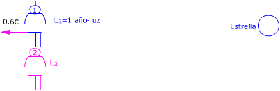

El rectángulo representa un recinto que se mueve respecto al observador 2 (Nave) con velocidad 0.6c. El observador 1 (Tierra) y la estrella están dentro del recinto  Observador 1 (Tierra): Observador 2 (Nave) Aplicando la conversión de longitudes: L2 = γ L1 Para el pasajero de la nave la estrella està a una distancia γ·L1 y se acerca a una velocidad 0.6c. Tardará en llegar: $$\begin{aligned} &\Delta t_2=\frac{L_2}{v}=\frac{\gamma\,L_1}{v}\\[6pt] &\Delta t_2=\sqrt{1-\left(\frac{0{,}6\,c}{c}\right)^{2}}\ \frac{1\ \mathrm{a}\cdot c}{0{,}6\,c}=1{,}33\ \mathrm{a} \end{aligned}$$ |